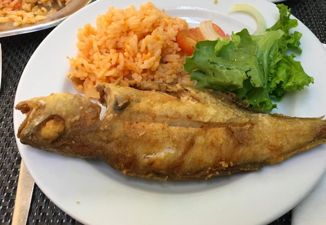

Os Nossos Pratos
Apresentamos alguns dos nossos pratos mais apreciados.
Renda-se à culinária tradicional Portuguesa!
Cozido à Portuguesa
Um clássico prato português, preparado com o nosso toque especial.
Feijoada
Com feijão preto acompanhado com banana frita.
Grão de bico com bacalhau cozido
Delicioso e saboroso, com os produtos mais frescos.

Faneca Frita
Servida com um fantástico arroz de tomate.

Peixe assado no forno
O sabor autêntico de Portugal.
Molotov
Deliciosa sobremesa da casa.